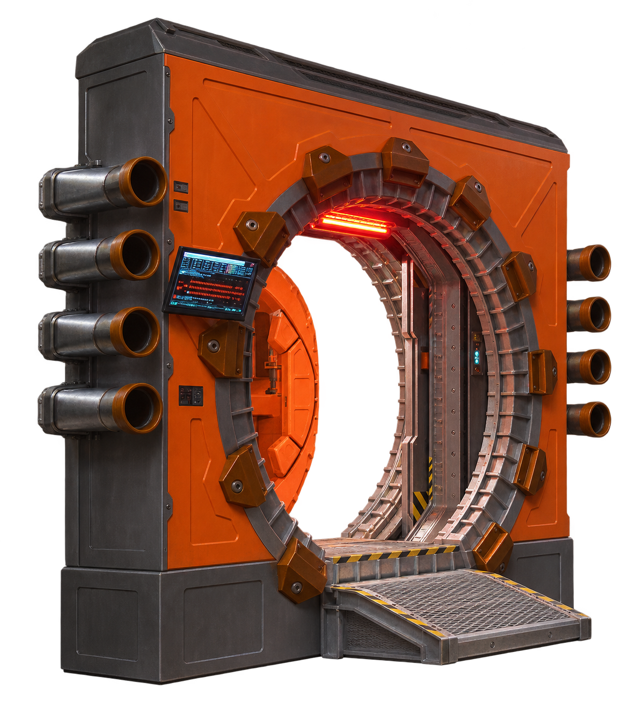

Retenu au catalogue
Sas latéral orange

Passage central transparent ; panneau orange entrouvert comme sur le plateau.
- Lecture du petit écran et microtypographie reconstruites, sans concordance caractère par caractère.
- Reliefs, épaisseurs et quelques jonctions interprétés depuis la perspective photographique.
- Aucune métrique de film, collision ou traversée du jeu certifiée.

Empreinte SHA-256
cc292e5458b1f0f91a0559c232773f736e1a88c49041450fb16641441e787f59